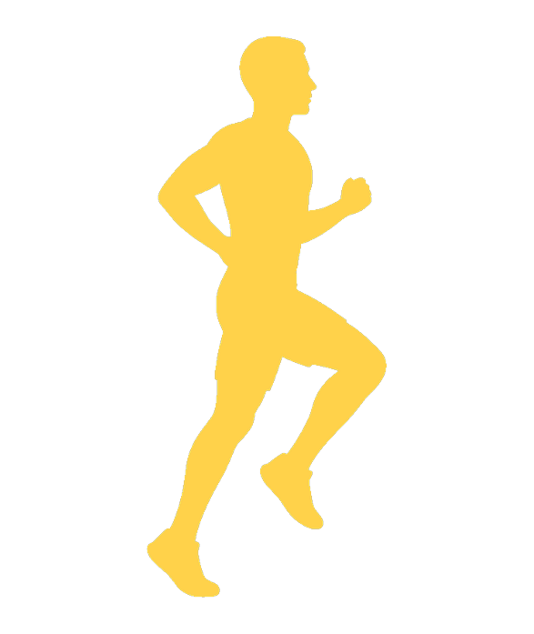

奥球磨男子駅伝 大学・実業団の部で初優勝
2時間3分33秒。創価大Aと8秒差。3区・田中愛睦で首位、塚本瑞起が逃げ切り。
SHIBUYA HILL · NIGHT COURSE
NIGHT COURSE / SHIBUYA
交差点を抜けて、出雲へ。The night still runs on the hill.


NEWS
2時間3分33秒。創価大Aと8秒差。3区・田中愛睦で首位、塚本瑞起が逃げ切り。
和久井夏輝、吉田蔵之介、田中愛睦、塚本瑞起。多良木町役場前発着、9:30。
味の素（株）と製品サプライ契約を締結。アミノバイタル®の提供と栄養・コンディショニング支援。
IMAGES